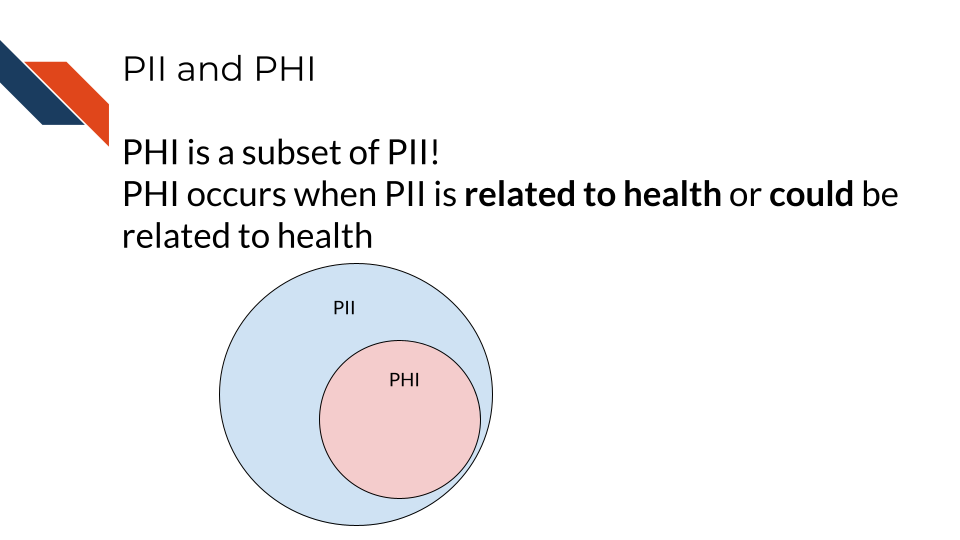

Chapter 7 Data Privacy
Cancer research often involves personal health data that requires compliance with Health Insurance Portability and Accountability Act (HIPAA) regulations. In this section we will discuss data management strategies to maintain compliance with these important regulations.
Cancer research often involves the collection of information about research participants that is personal. There are two categories of such information: personal identifiable information (PII) and protected health information (PHI)
Note that these are general definitions and whether something counts as PII or PHI has to be evaluated in a case-by-case basis.
7.1 PII (personal identifiable information)
PII (personal identifiable information) are aspects of a person that could allow you to identify that person.
PII is defined by the US Department of Labor as:
“Any representation of information that permits the identity of an individual to whom the information applies to be reasonably inferred by either direct or indirect means.”
PII is also defined by the US General Services Administration as:
“Information that can be used to distinguish or trace an individual’s identity, either alone or when combined with other personal or identifying information that is linked or linkable to a specific individual.”
Why is this term defined by the Department of Labor and the US general Services Administration? Because the Privacy Act of 1974 (privacy_act_2022?), is a US federal law that governs the “collection, maintenance, use and dissemination” of personal information. US agencies have access to a large amount of PII and must act in accordance with the Privacy Act to protect this data.
Examples include (but aren’t limited to):
- Name
- Telephone number
- Address
- Social security number
- Age
- Driver’s licenses
- Medical record numbers
- Full face photographs
- IP addresses
Some PII as in the examples above can pose significant risk to individuals if other people were to gain access, like social security numbers. Other PII, like age, does not necessarily pose as much risk unless combined with other information.
Thus, this information is categorized in two ways: nonsensitive, which is easy to find and poses little risk, and sensitive information, which is harder to find, poses higher risk, and requires more protection.
7.1.1 PII Risk
What is the risk of PII getting into the hands of people it shouldn’t? Why was the Privacy Act necessary?
PII can pose a risk for identity theft which can have financial, professional, criminal, and personal consequences (dinardi_14_2022?), as criminals can get loans and credit card in other people’s names, as well as commit crimes under the guise of other people’s identities. This can result in reputation loss and loss of opportunities.
In addition, the leak of PII can also pose a safety risk, as criminals can identify the likely locations of specific individuals if performing targeted crimes.

7.2 PHI (protected health information)
The U.S. Department of Health & Human Services describes protected health information (PHI) as:
…information including demographic data that relates to:
the individual’s past, present or future physical or mental health or condition, the provision of health care to the individual, or the past, present, or future payment for the provision of health care to the individual
This includes 18 categories:
- Patient names
- Geographical elements (such as a street address, city, county, or zip code)
- Dates related to the health or identity of individuals (including birthdates, date of admission, date of discharge, date of death, or exact age of a patient older than 89)
- Telephone numbers
- Fax numbers
- Email addresses
- Social security numbers
- Medical record numbers
- Health insurance beneficiary numbers
- Account numbers
- Certificate/license numbers
- Vehicle identifiers
- Device attributes or serial numbers
- Digital identifiers, such as website URLs
- IP addresses
- Biometric elements, including finger, retinal, and voiceprints
- Full face photographic images
- Other identifying numbers or codes
7.3 PHI is a subset of PII
PHI is a subset of PII. It is personal identifiable information that relates to or could relate to an individual’s health.

Some PII is always PHI, like health insurance numbers or clinical data such as radiology reports with names or other distinguishing features. Other PII becomes PHI based on context. For example, name and email address aren’t necessarily PHI, unless they are in the context of medical care or research. This could be the case if a patient receives notes from the doctor through email or researchers have a database of participants with email addresses that could be used to distinguish the identity of people in the study.
7.4 PHI Risk
PHI poses an additional risk rather than just typical PII because it includes sensitive health information. This can be used to determine if an individual has a particular condition or health risk and could be misused in employment or insurance decisions.
7.5 Cancer research data and PHI
Certain omics or genomics data, such as whole genome sequencing (essentially a genomic signature), and some radiology images with distinguishing features can be used to identify individuals. Advances in machine learning may further increase the identifiability of these data types in the future.

So what does this mean for the data you handle?
A non-comprehensive list of identifiable and protected information:
- Some clinical information in metadata (should be carefully reviewed and de-identified where possible)
- Genomic sequences
- Whole genome sequences
- Exome sequencing
- Whole transcriptome sequencing
- Single nucleotide polymorphisms
- Genealogy information
What is not protected and generally is safe:
- Summarized cohort data
Data in which individuals have been aggregated together is generally safe. For example, a file that includes an average age calculated across all individuals or a large subset would generally be considered safe. However, this may not always be the case with individuals with very rare conditions or individuals belonging to a small group (such as indigenous or pediatric populations).
- De-identified data
Data where all personal identifiers that could link the data to a specific individual are removed, making the data anonymous and safe for sharing under certain conditions. However, in the context of genomic data, de-identification may not always guarantee complete anonymity. This is because genomic data, especially when it contains rare or unique variants, can sometimes be linked back to individuals. The presence of such variants may allow re-identification, particularly if the data is combined with external datasets. As a result, additional protections may be necessary, such as restricted access or data sharing with safeguards in place, to prevent re-identification risks.
It has been shown that certain types of de-identified genomic data can be re-identified due to the availability of genomic data in datasets like 23andMe, where relatives with unique genomic features can be used to identify relatives of individuals in studies.
The following articles have more extensive information about the current re-identification risk of different genomic data types:
- Privacy considerations for sharing genomics data
- Identifying personal genomes by surname inference
- Preserving genomic privacy via selective Sharing
- Impact of HIPAA’s minimum necessary standard on genomic data sharing
- Genetic information privacy
- The law and medical privacy
- The broken promise that undermines human genome research
7.6 How to ensure the privacy of this information
Your institution will have guidance on how to protect sensitive data, but in general there are 4 main strategies we will summarize here:
- Limit access to the data
The protected data is seen by the smallest number of individuals possible, all of whom have been properly trained and certified to handle data. Make sure the data are stored in a place that only these few people who are allowed have access to it. If you aren’t sure who has access to a place – don’t put the data there!
- Aggressively de-identify the shared data
Before results or data are shared or published, they must be de-identified. We will discuss more about what this is in the next chapter. If data have been summarized at the cohort-level with no personal identifiers, then it is probably safe to share.
- Consider a data use agreement
A Data Use Agreement (DUA) is required even for de-identified data, particularly when human subjects data are shared for research purposes or across institutions. While HIPAA does not mandate a DUA for fully de-identified data under certain conditions, other factors—such as institutional policies, ethical concerns, or specific data sharing agreements—may require one.
Data use agreements restrict who can access and use the data that you might share, as well as what they may do with the data. Importantly this needs to be agreed upon by an IRB and consented to by the research participants in some manner before it is in use.
See this guidance on DUAs and this guide for DUAs for more information about when you might need a data use agreement. Note that your particular situation and institute may have slightly different rules or restrictions.
Check out these DUA templates to get started:
Be sure to follow the attribution guidelines outlined in the links if you adapt them for your use.
- When in doubt, prioritize caution
If you are uncertain whether data contains PHI or PII, consult with relevant offices at your institute, such as an IRB, a research administration office, or a HIPAA compliance office.
If you plan to share your data somewhere and you are unsure whether a database or repository is secure and HIPAA compliant, ask those who manage that database or repository to confirm!
7.7 How is HIPAA enforced?
The Office for Civil Right (OCR) of the United States Department of Health and Human Services is in charge of enforcing HIPAA compliance.
If you feel that someone is using or sharing data that are in violation of HIPAA compliance, in most cases, you should start by attempting to resolve the violation first through local means by contacting research administrators or management. However, you can also choose to file a complaint online using the OCR compliant portal. Note that complaints should be filed within 180 days of the violation. If the OCR determines that a covered entity is in violation (the individuals or institutes who are required to follow HIPAA compliance regulations), then the OCR will follow up to ensure that the entity complies, takes corrective action, or agrees to a settlement.
What is a covered entity? These are health care providers (doctors, dentists etc.), health plan/insurance companies and programs (Medicare, Medicaid, etc.) and those who work at health care clearinghouses (places that process nonstandard health information). See this link about covered entities for more information and see this link website for more in-depth information.
If compliance is not resolved, then the covered entity may have to pay fines.
The civil fines for HIPAA violations by a covered entity range from $100 to $50,000 PER VIOLATION for willful neglect and untimely correction, with a $1.5M yearly cap on fines. In addition to civil penalties, an individual who knowingly committed the violation may face a criminal penalty of up to $50,000 and 1 year in prison. If the case involves misrepresentation/misleading conduct, penalties increase to $100,000 and 5 years prison, and to $250,000 and 10 years prison if the violation involves personal gain or malicious harm (violations_2018?).
7.7.1 Common Violations
Data security and HIPAA violations are talked about more in this course about ethical data handling. It offers more information to mitigate the following challenges.
Common violations of HIPAA taken from (violations_2018?) are:
- A lack of encryption
If your email or data transfer is intercepted it is important to keep your data safe!
- Computer hacking or phishing
If your computer gets hacked by hackers through a phishing email or otherwise, they could sell the data to third party organizations who could profit off of the information.
- Unauthorized Access
Allowing or accidentally allowing fellow lab mates who are not authorized to access the data is a violation of HIPAA. This can lead to other neglectful or malicious practices that result in larger disclosures of PHI. Furthermore, using your laptop in public or even at home can pose a risk from people who may walk by.
- Loss or Theft of Devices
If your laptop or external storage device is stolen, data files with PHI can easily be obtained by whoever finds them next.
- Improper Disposal of data or devices
Sometimes there are remnants of your data still on your device!
- Unsecured access to data
Accessing your data from an unsecured WIFI network can also make the data vulnerable.
See the Privacy Rule and research FAQs for more information about HIPAA and research.
In summary, personal identifiable information (PII) and protected health information (PHI) are often collected for data and require extra care to protect our research participants from identity theft, discrimination, and other risks. Health Insurance Portability and Accountability Act (HIPAA) helps to protect patients by specifying requirements for how PHI should be protected. Common violations can be avoided from keeping good data security/privacy practices.